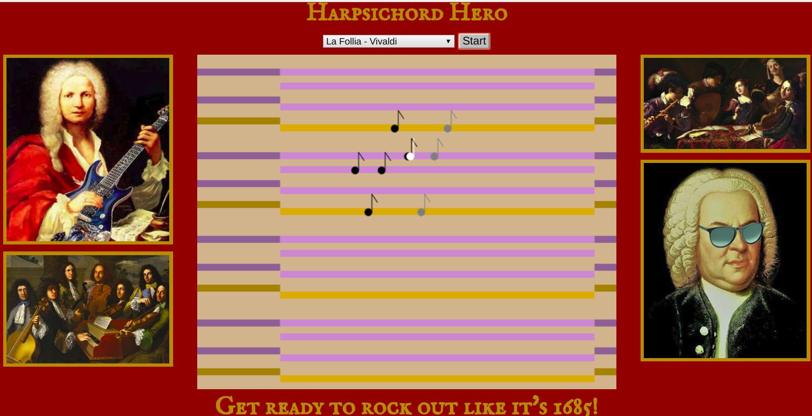
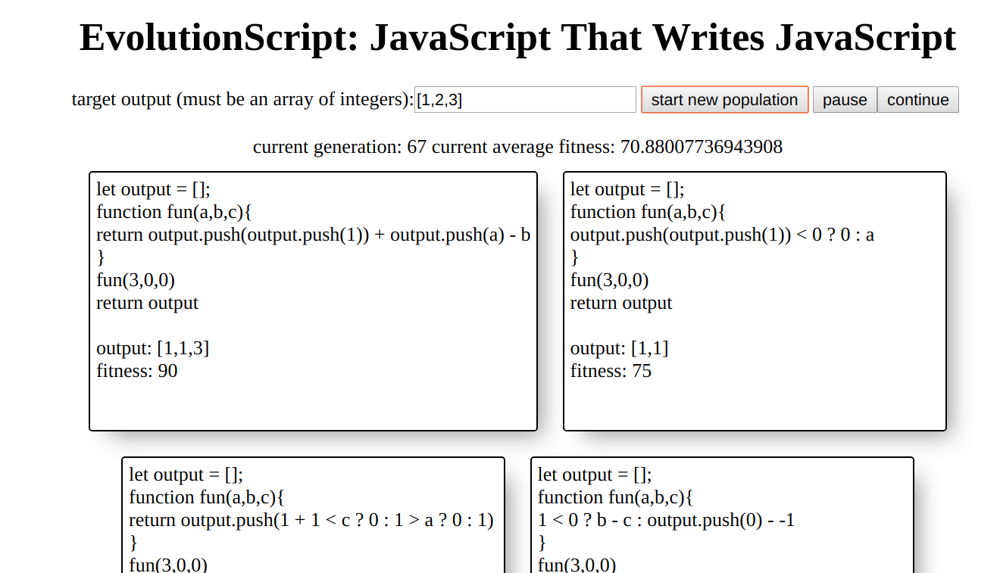

Github
GithubDouglas Lerner
Web Developer
About Me
I am a web developer based in New York City. I have a passion for creating web apps that connect people, educate, and entertain.
I recently completed a 3 month batch at the Recurse Center, which is a 3 month full-time self-directed programming retreat. During that time, I worked on a variety of projects, both as part of a team and alone, which touched on areas of programming that include browser extension development, game development, machine learning, natural language processing, genetic algorithms, and computer generated music.
In my previous career, I worked as an ESL teacher and Chinese translator, and I often incorporate this expertise into my projects.
I have experience working with a variety of web-based technologies including:
- JavaScript
- HTML5
- CSS3
- React
- Node
- Express
- WebRTC
- Phaser
- Websockets
- Web Audio
- Three.js
- Tone.js
- HTML Canvas
- Chrome API
- Webpack
- JQuery
Recent Projects
LeetCode Pairing Chrome Extension

A Chrome extension which enables coders to pair program over the internet and solve LeetCode.com algorithm coding challenges together. Users can type into a shared text editor and video chat in real time, all in the browser.
Technologies Used: React, Node Express, Chrome API, Oauth2, WebRTC, Socket.io, Codemirror API, Webpack
Download Github Repo
Harpsichord Hero

A digital musical instrument that allows people with no musical background to improvise harpischord music in the baroque style. The instrument has a built-in knowledge of harmony and musical style, which allows users to effortlessly improvise complex melodies and chord progressions.
Technologies Used: HTML canvas, Teoria.js, Soundfont-Player, MIDI.js
Live Demo Github Repo
Neuro-Evolution Cocktail Party

A simulation of human social interactions, which evolves social agents that can adapt to one another's behaviors. Uses a JavaScript implementation of the NEAT (Neuro Evolution through Augmented Topology) genetic algorithm, which evolves neural networks through the process of Darwinian evolution.
Technologies Used: Vanilla JS and Neatapic.js
Live Demo Github Repo
Cyberpunks Rock Climbing

A multiplayer, cooperative, physics-based rock climbing game. The players must scale the cliff without putting too much weight on any one limb, or they will fall off. Up to four players can join a game, with each player controlling a different limb.
Technologies Used: Phaser, P2 Physics engine, Node Express, Socket.io
Live Demo Github Repo
EvolutionScript
 Genetic programming in the browser. The user enters a series of integers representing the desired output of a program, and the app generates hundreds of random abstract syntax trees which are converted into JavaScript programs, evaluated and sorted based on performance. The fittest ASTs are allowed to reproduce, mutate, and evolve, producing programs who's output approximates the user's input.
Technologies Used: Vanilla JavaScript
Live Demo Github Repo
Mandarin Shadowboxing

A tool for learning spoken Mandarin Chinese which breaks down complex sentences into their simplest components allowing for rapid language acquisition. Based off the "shadowing" technique of language professor Alexander Arguelles, in which students learn phrases in a foreign language through imitation of recordings of native speakers.
Technologies Used: JQuery and Howler.js